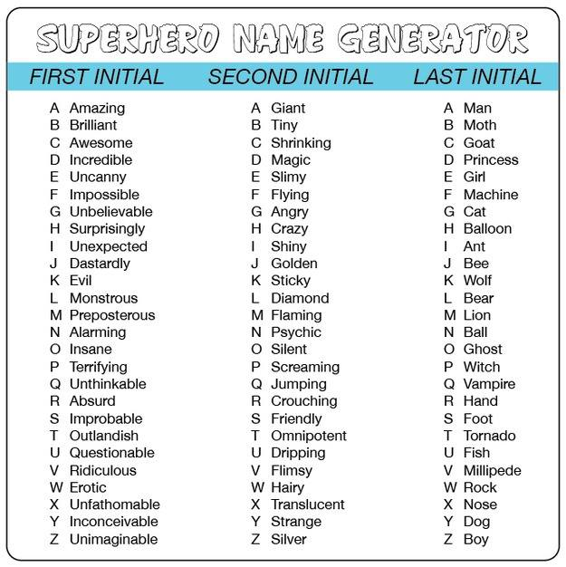

Write a module containing three functions. When run, the module should
prompt the user for a filename and a number of lines (let's refer to it as
n) and then call each function in turn with these
parameters.
The function head should return a list containing the
first n lines of the file.
The function tail should return a list containing the
last n lines of the file.
The function longest should return a list containing
the longest n lines of the file.
The output of running the module might look like this:
Name of file to test with: pooh.txt
Number of lines to display: 3
head says the first 3 lines are:
The more it snows
(Tiddely pom),
The more it goes
tail says the last 3 lines are:
How cold my toes
(Tiddely pom),
Are growing.
longest says the longest 3 lines are:
The more it snows
The more it goes
And nobody knows
Since the file could be very long you will not want to read the whole thing into memory as a list of lines...
biggest()The last few assignments have provided you with examples of testing
harnesses to ensure programs are working correctly. Now it is time for you
to design some tests of your own. The file a8_2.py
contains six versions of a function named biggest that all
claim to return the largest of three values they are passed. Add test cases
to the program to determine which ones (if any) work correctly. Based on
your test cases identify the situations (if any) in which each version
fails, and the reason for the failure, i.e. what the problem is with the
code. Enter your answers into the docstrings for each function.
Complete the program crud_controller.py, i.e. insert code for the remaining functions, and make sure adding new quotes can't delete existing ones. Rename it a8p3v1.py.
Write a function called superhero_name_generator that is passed a string containing someone's full name, e.g. 'Timothy Nicholas Topper', and returns their superhero name according to the chart below, e.g. my superhero name is Outlandish Psychic Tornado.
Put your function in a module with an if __name__ == '__main__': section that tests it.

Use the following naming scheme for your program files: aassignment#pproblem#vversion#.py . So your first attempt at problem 1 on this assignment will be named a8p1v1.py and your second attempt (should there be one) will
be named a8p1v2.py .
Submit your assignment by emailing your python programs to me. I advise you to submit early and submit often, since I will often review your programs as they are submitted and provide feedback that will let you improve them.